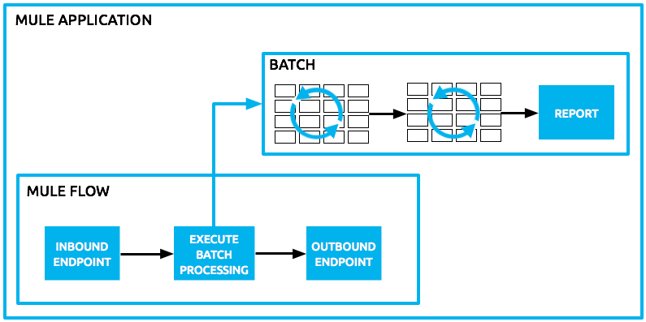
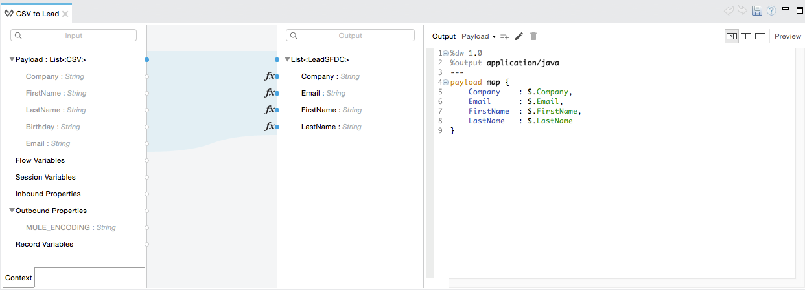

Batch Processing
Enterprise, CloudHub
Mule possesses the ability to process messages in batches. Within an application, you can initiate a batch job which is a block of code that splits messages into individual records, performs actions upon each record, then reports on the results and potentially pushes the processed output to other systems or queues. This functionality is particularly useful when working with streaming input or when engineering "near real-time" data integration between SaaS applications.
For example, batch processing is particularly useful when working with the following scenarios:
-
Integrating data sets, small or large, streaming or not, to parallel process records.
-
Synchronizing data sets between business applications, such as syncing contacts between NetSuite and Salesforce and causing "near real-time" data integration.
-
Extracting, transforming and loading (ETL) information into a target system, such as uploading data from a flat file (CSV) to Hadoop.
-
Handling large quantities of incoming data from an API into a legacy system.
|
Batch processing is exclusive to Mule Enterprise runtimes To build applications with Batch jobs and run them in a test or production environment, you must build the application with an Enterprise runtime. Learn more about Changing Runtimes in Studio. |
Prerequisites
This document assumes that you are familiar with:
-
Anypoint Studio. See Anypoint Studio Essentials chapter to learn more about developing with Mule’s graphical user interface.
-
Anypoint DataMapper User Guide and Reference transformer that you can use in applications in Studio. Note: DataMapper has been replaced by DataWeave.
Overview
Within a Mule application, batch processing stands on its own as an independent block of code. From an external resource, batch accepts sets of data perhaps polling for the input to process in chunks (see below). Batches elegantly handle any record-level failures that might occur in processing so as to prevent failure of a complete batch job. Further, you can set or remove variables on individual records so that during batch processing, Mule can route or otherwise act upon records in a batch according to a record variable.
On a traditional on-line processing model, each request is usually mapped to a worker thread.
Regardless of the processing type (either synchronous, asynchronous, one-way, request-response, or even if the requests are temporarily buffered before being processed), servers usually end up in a 1:1 relationship between a request and a running thread.
When it comes to a batch job, all records are first stored in a persistent queue before the processing phase begins, so the traditional threading model wouldn’t apply. See Basic Anatomy for more information on how batch processing differs from the regular threading model.
Basic Anatomy
This section explores the basic anatomy of the batch processing construct in Mule, and how its parts work together to process batches of data in an application.
Complete Code Example to see full example applications.
|
Batch Processing at a Glance A batch job is a top-level element in Mule which exists outside all Mule flows. Batch jobs split large messages into records which Mule processes asynchronously in a batch job; just as flows process messages, batch jobs process records. A batch job contains one or more batch steps which, in turn, contain any number of message processors that act upon records as they move through the batch job. During batch processing, you can use record-level variables ( A batch job executes when triggered by either a batch executor in a Mule flow or a message source in a batch-accepting input. Access Batch Processing Reference for more information. |
|
Batch Job vs. Batch Job Instance Though defined in context above, it’s worth elaborating upon the terms batch job and batch job instance as they relate to each other.
|
The heart of Mule’s batch processing functionality lies within the batch job. In an application, the batch job element exists outside the context of any regular Mule flow. It is a block of code containing one or more batch steps which, as the label implies, process items step-by-step in a sequential order. Batch steps all fall within the Process Phase of batch processing (more on Batch Processing Phases below).
<batch:job name="myBatchJob">
<batch:process-records>
<batch:step name="Step1"/>
<batch:step name="Step2"/>
<batch:step name="Step3"/>
</batch:process-records>
</batch:job>
<flow name="flowOne">
...
</flow>Batch processing provides record I/O for large or streamed Mule messages.
Since Batch was designed to work with millions of records, they need to be stored in a persistent storage queue. However, consider having 1 million records to place in a queue for a 3 step batch job. At least three million I/O operations occur as Mule takes and requests each record as it moves through the job’s phases.
To improve performance, Mule queues and schedules batch records in blocks of 100 records (default). This lessens the amount of I/O requests and improves an operation’s load.
The default configuration assigns 16 threads to each job. Therefore, in a default configured batch job:
-
Each of those threads is given a block of 100 records.
-
Each thread iterates through that block processing each record.
-
Each block is queued back and the process continues.
In this example, performance requires having enough available memory to process the 16 threads in parallel, which means moving 1600 records from persistent storage into RAM. The larger your records and their quantity, the more available memory you need for batch processing.
| You can change the amount of threads per job in the threading-profile element. |
Each batch step in a batch job contains message processors which act upon a record to transform, route, enrich or otherwise process data contained within it. By leveraging the functionality of existing Mule message processors, the batch processing construct offers a lot of flexibility in terms of how a batch job processes records; see example below. (Note that details in code snippet are abbreviated so as to highlight batch elements.)
|
Are there any message processors that you cannot use in batch processing? The only element you cannot use in batch processing is a request-response inbound connector. Otherwise, you are free to leverage any and all Mule message processors to build your batch processing flow. |
<batch:job name="myBatchJob">
<batch:process-records>
<batch:step name="Step1">
<message processor/>
<message processor/>
</batch:step>
<batch:step name="Step2">
<message processor/>
</batch:step>
<batch:step name="Step3">
<message processor/>
<message processor/>
</batch:step>
</batch:process-records>
</batch:job>
<flow name="flowOne">
...
</flow>|
As an improvement for batch job features, since version 3.8, Mule allows you to configure specific block sizes for each batch job and custom job instance IDs. |
Batch Configurable Block Sizes
After 3.8, Mule allows you to configure the block size in the batch job properties tab.
The standard model of 16 threads, with 100 records per batch job works for most use cases.
However, consider three use cases where you might need to increase or decrease the block size:
-
Assume you have 200 records to process through a batch job. With the default 100-record block size, Mule can only process two records in parallel at a time. If you request fewer than 101 records, then your processing becomes sequential. If you need to process really heavy payloads, then queueing a hundred records demands a large amount of working memory.
-
Consider a batch job that needs to process images, and an average image size of 3 MB. You then have 100 blocks with payloads of 3 MB, being processed in 16 threads. Hence your default threading-profile setting would require around 4.6 GB of working memory just to keep the blocks in queue. You should set a lower block size to distribute each payload through more jobs and lessen the load on your available memory.
-
Suppose having 5 million records with payloads so small that you can fit blocks of 500 records in your memory without problems. Setting a larger block size improves your batch job time without sacrificing working memory load.
By configuring a new block size in the properties tab, you can overcome all these use cases. To take full advantage of this feature, you need to understand how the block sizes affect your batch job. Running comparative tests with different values and testing performance helps you find an optimum block size before moving this change into production.
Remember that modifying this value is optional. If you apply no changes, the default value is 100 records per block.
Batch Processing Phases
Batch processing in Mule takes place within four phases (see table below). Within Studio’s visual editor, batch jobs manifest as flow-like objects that are visually divided according to the phases of batch processing.
| Phase | Configuration | |
|---|---|---|
1 |
Input |
optional |
2 |
Load and Dispatch |
implicit, not exposed in a Mule application |
3 |
Process |
required |
4 |
On Complete |
optional |
Input
The first phase, Input, is an optional part of the batch job configuration and is designed to Triggering Batch Jobs via an inbound connector, and/or accommodate any transformations or adjustments to a message payload before Mule begins processing it as a batch.
During this phase, Mule performs no splitting or aggregation, creates no records, nor queues anything for processing; Mule is not yet processing the message as a collection of records, it only receives input and prepares the message payload for processing. In this phase, you use message processors to act upon the message the same way you would in any other context within a Mule application. As it leaves the Input phase for the next phase, the data can be serializable (i.e. in a "splittable" format such as a collection or an array) or non-serializable.
The batch:input child element appears first inside a batch:job element; indeed, it cannot exist anywhere else within the batch job it can only be first.
Studio Visual Editor
XML Editor
Note that details in code snippet are abbreviated so as to highlight batch phases, jobs and steps. See Complete Code Example for more detail.
<batch:job name="Batch3">
<batch:input>
<poll>
<sfdc:authorize/>
</poll>
<set-variable/>
</batch:input>
<batch:process-records>
<batch:step/>
<batch:process-records>
</batch:job>Load and Dispatch
The second phase, Load and Dispatch, is implicit and performs all the "behind the scenes" work to create a batch job instance. Essentially, this is the phase during which Mule turns a serialized message payload into a collection of records for processing as a batch. You don’t need to configure anything for this activity to occur, though it is useful to understand the tasks Mule completes during this phase.
-
Mule sends the message payload through a collection splitter. This first step triggers the creation of a new batch job instance.
-
Mule creates a persistent queue and associates it to the new batch job instance. A batch job instance is an occurrence in a Mule application resulting from the execution of a batch job in a Mule flow; it exists for as long as Mule processes each record in a batch.
-
For each item generated by the splitter, Mule creates a record and stores it in the queue. (This is an "all or nothing" activity Mule either successfully generates and queues a record for every item, or the whole message fails during this phase.)
-
Mule presents the batch job instance, with all its queued-up records, to the first batch step for processing.
Process
In the third phase, Process, Mule begins asynchronous processing of the records in the batch. Within this required phase, each record moves through the message processors in the first batch step, then is sent back to the original queue while it waits to be processed by the second batch step and so on until every record has passed through every batch step. Only one queue exists and records are picked out of it for each batch step, processed, and then sent back to it; each record keeps track of what stages it has been processed through while it sits on this queue. Note that a batch job instance does not wait for all its queued records to finish processing in one batch step before pushing any of them to the next batch step. Queues are persistent.
Mule persists a list of all records as they succeed or fail to process through each batch step. If a record should fail to be processed by a message processor in a batch step, Mule can simply continue processing the batch, skipping over the failed record in each subsequent batch step. (Refer to the Handling Failures During Batch Processing section for more detail.)
At the end of this phase, the batch job instance completes and, therefore, ceases to exist.
Beyond simple processing of records, there are several things you can do with records within batch steps:
-
You can set record variables on records and pass them from step to step (read more)
-
You can apply filters by adding accept expressions within each batch step to prevent the step from processing certain records; for example, you can set a filter to prevent a step from processing any records which failed processing in the preceding step (read more)
-
You can commit records in groups, sending them as bulk upserts to external sources or services. (read more)
Studio Visual Editor
XML Editor
Note that details in code snippet are abbreviated so as to highlight batch phases, jobs and steps. See Complete Code Example for more detail.
<batch:job name="Batch3">
<batch:input>
<poll doc:name="Poll">
<sfdc:authorize/>
</poll>
<set-variable/>
</batch:input>
<batch:process-records>
<batch:step name="Step1">
<batch:record-variable-transformer/>
<data-mapper:transform/>
</batch:step>
<batch:step name="Step2">
<logger/>
<http:request/>
</batch:step>
</batch:process-records>
</batch:job>On Complete
During the fourth phase, On Complete, you can optionally configure Mule to create a report or summary of the records it processed for the particular batch job instance. This phase exists to give system administrators and developers some insight into which records failed so as to address any issues that might exist with the input data. While batch:input can only exist as the first child element within the batch:job element, batch:on-complete can only exist as the final child element.
Studio Visual Editor
XML Editor
Note that details in code snippet are abbreviated so as to highlight batch phases, jobs and steps. See Complete Code Example for more detail.
<batch:job name="Batch3">
<batch:input>
<poll doc:name="Poll">
<sfdc:authorize/>
</poll>
<set-variable/>
</batch:input>
<batch:process-records>
<batch:step name="Step1">
<batch:record-variable-transformer/>
<data-mapper:transform/>
</batch:step>
<batch:step name="Step2">
<logger/>
<http:request/>
</batch:step>
</batch:process-records>
<batch:on-complete>
<logger/>
</batch:on-complete>
</batch:job>After Mule executes the entire batch job, the output becomes a batch job result object (BatchJobResult). Because Mule processes a batch job as an asynchronous, one-way flow, the results of batch processing do not feed back into the flow which may have triggered it, nor do the results return as a response to a caller (indeed, any message source which feeds data into a batch job MUST be one-way, not request-response). Instead, you have two options for working with the output:
-
Create a report in the On Complete phase, using MEL expressions to capture the number of failed records and successfully processed records, and in which step any errors might have occurred.
-
Reference the batch job result object elsewhere in the Mule application to capture and use batch metadata, such as the number of records which failed to process in a particular batch job instance.
If you leave the On Complete phase empty (i.e. you do not set any message processors within the phase) and do not reference the batch job result object elsewhere in your application, the batch job simply completes, whether failed or successful. Good practice dictates, therefore, that you configure some mechanism for reporting on failed or successful records so as to facilitate further action where required. Refer to Batch Processing Reference for a list of available MEL expressions pertaining to batch processing.
Triggering Batch Jobs
You can trigger, or invoke, a batch job in one of two ways:
-
Via a batch reference message processor to reference the batch job from within a Mule flow in the same application. In Anypoint Studio, this processor is the Batch Execute building block.
 -
Via an inbound, one-way message source placed at the beginning of the batch job (cannot be request-response inbound message source)
Use a batch reference message processor (
batch:execute) in your Mule flow to reference a batch job that you defined in your application. Refer to the example below. When the flow receives a message, the batch message processor instructs Mule to process the input in batches. Each time a Mule flow triggers the execution of a batch job, Mule runs a fresh batch job instance. The instance exists for as long as it takes to process each record in a batch, and results in a a batch job result object. Mule can run multiple batch job instances at the same time and can continue processing a batch even if one or more of its records is faulty. This "continue processing" functionality ensures that fewer batch jobs fall victim to a single point of failure. (Refer to the Handling Failures During Batch Processing for more detail on error handling during batch processing; refer to section further below for more detail on customizing the name of batch job instances.)
Studio Visual Editor
XML Editor
Note that details in code snippet are abbreviated so as to highlight batch phases, jobs and steps. See Complete Code Example for more detail.
<batch:job name="Batch2">
<batch:process-records>
<batch:step name="Step1">
<batch:record-variable-transformer/>
<data-mapper:transform/>
</batch:step>
<batch:step name="Step2">
<logger level="INFO" doc:name="Logger"/>
<http:request/>
</batch:step>
</batch:process-records>
<batch:on-complete>
<logger level="INFO" doc:name="Logger"/>
</batch:on-complete>
</batch:job>
<flow name="batchtest1Flow1">
<http:listener/>
<data-mapper:transform/>
<batch:execute name="Batch2"/>
</flow>Use an inbound, one-way message source placed in the input phase of the batch job to trigger the start of batch processing. When it receives data from an external source or service, the message source initiates batch processing, beginning with any preparation you may have configured in the input phase. Refer to the example below, which leverages poll functionality to regularly fetch data from Salesforce.
Studio Visual Editor
XML Editor
Note that details in code snippet are abbreviated so as to highlight batch phases, jobs and steps. See Complete Code Example for more detail.
<batch:job name="Batch1">
<batch:input>
<poll>
<sfdc:authorize/>
</poll>
</batch:input>
<batch:process-records>
<batch:step name="Step1">
<batch:record-variable-transformer/>
<data-mapper:transform/>
</batch:step>
<batch:step name="Step2">
<logger/>
<http:request/>
</batch:step>
</batch:process-records>
<batch:on-complete>
<logger/>
</batch:on-complete>
</batch:job>Handling Failures During Batch Processing
From time to time, when processing a batch job, a Mule message processor in a batch step may find itself unable to process a record. When this occurs perhaps because of corrupted or incomplete record data Mule has three options for handling a record-level error:
-
Finish processing the current batch step, skip any remaining batch steps and push all records to the On Complete phase (where, ideally, you have designed a report to notify you of failed records).
When one of the records fails, the batch job does not immediately stop there.
The batch step where the failed record was encountered needs to finish processing before Mule stops the batch job.This means that if you set a block size of 100 records, and the first record fails, Mule still needs to process the remaining 99 records before stopping the batch job.
-
Continue processing the batch regardless of any failed records, using filters to instruct subsequent batch steps how to handle failed records
-
Continue processing the batch regardless of any failed records (using filters to instruct subsequent batch steps how to handle failed records), until the batch job accumulates a maximum number of failed records at which point Mule pushes all records to the On Complete phase (where, ideally, you have designed a report to notify you of failed records)
By default, Mule’s batch jobs follow the first error handling option which halts the batch after processing the last step where a record-level error was triggered. However, you can use a batch job attribute and batch step accept expression to explicitly configure the batch job to handle failures according to the second or third above-listed options. The table below describes how to configure the batch job attribute to customize error handling.
| Failed Record Handling Option | Batch Job | |
|---|---|---|
Attribute |
Value |
|
Stop processing upon finishing the current step where the record failed |
|
|
Continue processing indefinitely, regardless of the number of failed records |
|
|
Continue processing until reaching maximum number of failed records |
|
|
<batch:job name="Batch1" max-failed-records="0">Read more about fine-tuning filters on batch steps to manage failed records at a more granular level.
Also check MEL expressions for Batch Processing for a detailed description of the MEL expressions you can use to monitor
Crossing the Max Failed Threshold
When a batch job accumulates enough failed records to cross the the max-failed-records threshold, Mule aborts processing for any remaining batch steps, skipping directly to the On Complete phase.
For example, if you set the value of max-failed-records to "10" and a batch job accumulates 10 failed records in the first of three batch steps, Mule does not attempt to process the batch through the remaining two batch steps. Instead, it aborts further processing and skips directly to On Complete to report on the batch job failure.
If a batch job does not accumulate enough failed records to cross the max-failed-records threshold, all records successes and failures continue to flow from batch step to batch step; use filters to control which records each batch step processes.
Complete Code Example
This example uses batch processing to address a use case in which the contents of a comma-separated value file (CSV) of leads comprised of names, birthdays and email addresses must be uploaded to Salesforce. To avoid duplicating any leads, the batch job checks to see if a lead exists before uploading data to Salesforce. The description below outlines the steps the batch job takes in each phase of processing.
| Note that this example introduces features not discussed in great detail in this document. Consult Batch Filters and Batch Commit and Record Variable for more information. |
Studio Visual Editor

XML Editor
|
If you copy and paste the code into your instance of Studio, be sure to enter your own values for the global Salesforce connector:
How do I get a Salesforce security token?
|
<?xml version="1.0" encoding="UTF-8"?>
<mule xmlns:dw="http://www.mulesoft.org/schema/mule/ee/dw" xmlns:batch="http://www.mulesoft.org/schema/mule/batch" xmlns:data-mapper="http://www.mulesoft.org/schema/mule/ee/data-mapper" xmlns:sfdc="http://www.mulesoft.org/schema/mule/sfdc" xmlns:file="http://www.mulesoft.org/schema/mule/file" xmlns="http://www.mulesoft.org/schema/mule/core" xmlns:doc="http://www.mulesoft.org/schema/mule/documentation" xmlns:spring="http://www.springframework.org/schema/beans" xmlns:xsi="http://www.w3.org/2001/XMLSchema-instance" xsi:schemaLocation="http://www.springframework.org/schema/beans http://www.springframework.org/schema/beans/spring-beans-current.xsd
http://www.mulesoft.org/schema/mule/core http://www.mulesoft.org/schema/mule/core/current/mule.xsd
http://www.mulesoft.org/schema/mule/file http://www.mulesoft.org/schema/mule/file/current/mule-file.xsd
http://www.mulesoft.org/schema/mule/batch http://www.mulesoft.org/schema/mule/batch/current/mule-batch.xsd
http://www.mulesoft.org/schema/mule/ee/data-mapper http://www.mulesoft.org/schema/mule/ee/data-mapper/current/mule-data-mapper.xsd
http://www.mulesoft.org/schema/mule/sfdc http://www.mulesoft.org/schema/mule/sfdc/current/mule-sfdc.xsd
http://www.mulesoft.org/schema/mule/ee/dw http://www.mulesoft.org/schema/mule/ee/dw/current/dw.xsd">
<sfdc:config name="Salesforce" username="username" password="password" securityToken="SpBdsf98af9tTR3m3YVcm4Y5q0y0R" doc:name="Salesforce">
<sfdc:connection-pooling-profile initialisationPolicy="INITIALISE_ONE" exhaustedAction="WHEN_EXHAUSTED_GROW"/>
</sfdc:config>
<data-mapper:config name="new_mapping_grf" transformationGraphPath="new_mapping.grf" doc:name="DataMapper"/>
<data-mapper:config name="new_mapping_1_grf" transformationGraphPath="new_mapping_1.grf" doc:name="DataMapper"/>
<data-mapper:config name="leads_grf" transformationGraphPath="leads.grf" doc:name="DataMapper"/>
<batch:job max-failed-records="1000" name="Create Leads" >
<batch:threading-profile poolExhaustedAction="WAIT"/>
<batch:input>
<file:inbound-endpoint path="src/test/resources/input" moveToDirectory="src/test/resources/output" responseTimeout="10000" doc:name="File"/>
<dw:transform-message doc:name="CSV to Lead">
<dw:set-payload><![CDATA[%dw 1.0
%output application/java
---
{
}]]></dw:set-payload>
</dw:transform-message>
</batch:input>
<batch:process-records>
<batch:step name="lead-check" >
<enricher source="#[payload.size() > 0]" target="#[recordVars['exists']]" doc:name="Message Enricher">
<sfdc:query config-ref="Salesforce" query="dsql:SELECT Id FROM Lead WHERE Email = '#[payload["Email"]]'" doc:name="Find Lead"/>
</enricher>
</batch:step>
<batch:step name="insert-lead" accept-expression="#[recordVars['exists']== false]">
<logger message="Got Record #[payload], it exists #[recordVars['exists']]" level="INFO" doc:name="Logger"/>
<batch:commit size="200" doc:name="Batch Commit">
<sfdc:create config-ref="Salesforce" type="Lead" doc:name="Insert Lead">
<sfdc:objects ref="#[payload]"/>
</sfdc:create>
</batch:commit>
</batch:step>
<batch:step name="log-failures" accept-policy="ONLY_FAILURES" >
<logger message="Got Failure #[payload]" level="INFO" doc:name="Log Failure"/>
</batch:step>
</batch:process-records>
<batch:on-complete>
<logger message="#[payload.loadedRecords] Loaded Records #[payload.failedRecords] Failed Records" level="INFO" doc:name="Log Results"/>
</batch:on-complete>
</batch:job>
</mule>INPUT PHASE
-
The application first uses a File connector to upload a CSV file, then uses a DataWeave to convert the data format into a collection (see mapping below). Each item in the collection represents a lead. Each lead contains a company name, a first name, a last name, a birthday and an email address.

LOAD AND DISPATCH PHASE (IMPLICIT)
-
Invisible to the human eye, Mule creates a batch job instance, breaks the collection into records (each lead is now a record), queues the records for processing, then presents the ready-to-process batch job instance to the first batch step. None of these actions is configurable, thus Mule doesn’t expose any of these activities in the application.
PROCESS PHASE
-
Mule begins processing each lead as a record. The first batch step,
lead-check, uses a Salesforce Connector wrapped with a Message Enricher to:-
Query Salesforce to find out if a lead already exists: because the message is now the record, the application uses a MEL expression to extract the email address from the payload, then uses it to query Salesforce to find out if the lead exists.
-
Enrich the message with a record variable to indicate that the record (i.e. lead) already exists in the Salesforce account.
-
Studio Visual Editor
XML Editor
-
The second batch step,
insert-lead, uses a filter that only accepts records for which leads don’t already exist. It does so using an Accept Expression attribute on the batch step, indicating that any record that has been enriched with the record variableexistsshould not be excluded for processing by this batch step.
Studio Visual Editor
XML Editor
-
Next, the batch step uses a Logger to simply log all the records which Mule enriched with an
'exists'record variable. The list this logger produces could be useful in auditing the application to find out which of the leads on the CSV file already exist in Salesforce. -
Lastly, the batch step uses a Salesforce Connector wrapped with a Batch Commit to insert all new leads to Salesforce. The batch commit accumulates records as they trickle through the queue into the batch commit "bucket". When it has accumulated 200 as specified with the
sizeattribute of the batch commit element batch commit inserts all 200 records at once into Salesforce as new leads.
Studio Visual Editor
XML Editor
-
The final batch step,
log-failures, uses a Logger to log all records which failed to insert to Salesforce.
ON COMPLETE PHASE
-
The application uses yet another Logger to create a simple summary (see console output below) which indicates:
-
the number of records which successfully loaded to Salesforce
-
the number of records which failed to load
-
INFO 2013-11-19 11:10:00,947 [[training-example-1].connector.file.mule.default.receiver.01] org.mule.api.processor.LoggerMessageProcessor: 2 Loaded Records 1 Failed RecordsLimitations
-
Batch processing does not support the use of Business Events.
-
Insight does not support visibility into batch processing.
-
Mule Management Console (MMC) does not support visibility into batch processing.
-
Batch processing does not support job-instance-wide transactions. You can define a transaction inside a batch step which processes each record in a separate transaction. (Think of it as a step within a step.) Such a transaction must start and end within the step’s boundaries.
See Also
-
Access reference details about batch processing.
-
Examine the attributes you can configure for batch jobs, steps and message processors.
-
Learn more about filters in batch processing.
-
Learn more about batch commit.
-
Learn more about setting and removing record-level variables.
-
Learn more about MEL expressions you can use to access batch processing data.
-
Read more about Runtime Manager support for batch processing.
-
Learn more about Anypoint Connectors.
-
Learn more about Polling and Watermarks.
-
Learn more about DataWeave.